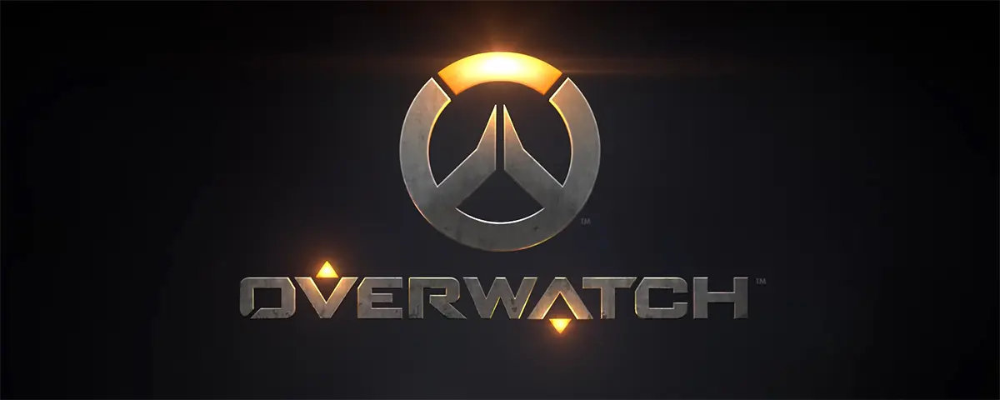

Introduction
Overwatch 2 expands the beloved team-based shooter with new maps, heroes, and modes. Set in a world threatened by omnic extremists, it promises an enriched narrative experience. With updated graphics and gameplay enhancements, Overwatch 2 aims to redefine cooperative multiplayer gaming while retaining the essence of its predecessor.
Story About overwatch
Set in a world reeling from the aftermath of the Omnic Crisis, Overwatch 2 follows the reassembled team as they confront a global uprising. With high-stakes missions and new threats emerging, heroes must unite once more, forging alliances and battling against overwhelming odds to save humanity.
PVE Game Mode
Overwatch 2's PvE game mode immerses players in gripping narratives as they embark on adrenaline-fueled missions against the backdrop of a world in turmoil, facing off against formidable AI adversaries. With dynamic challenges and diverse objectives, teamwork is paramount as heroes unite to thwart global threats and restore hope.
Discussion
Overwatch 2 sparks debates on its narrative-driven approach versus competitive integrity. Some laud its immersive story missions, while others fear it may dilute the original's focus on PvP. Balancing lore and gameplay innovation becomes paramount in discussions, as the community anticipates its impact on the franchise's future.
- New Heroes: Overwatch 2 introduces fresh characters like Sojourn and Echo, each with unique abilities adding depth to team compositions.
- Expanded Maps: With new locations such as Rio de Janeiro and Toronto, Overwatch 2 offers diverse battlegrounds for players to explore and conquer.
- PvE Missions: The game features story-driven cooperative missions, allowing players to delve deeper into the Overwatch universe while facing AI-controlled adversaries.
- Visual Overhaul: Overwatch 2 boasts enhanced graphics, elevating the game's aesthetic appeal with stunning character designs and immersive environments.
- Hero Progression: Players can customize and upgrade their favorite heroes with new abilities and cosmetics, adding depth to gameplay and personalization.
- Shared Multiplayer: Overwatch 2 maintains compatibility with the original game, ensuring a seamless transition for existing players while expanding the community and matchmaking options.
